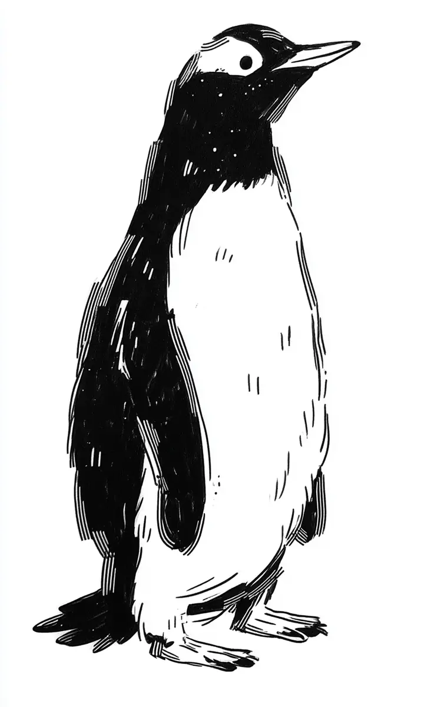

모두가 너는 물에서만 빛나는 새라고, 날개라는 것은 너에게 그저 헤엄을 위한 노에 지나지 않는다고 말할 때마다, 여울은 아무 대꾸도 하지 않은 채 그저 고개를 천천히 뒤로 젖혀 한 번도 닿아 본 적 없는 잿빛 하늘을 올려다보곤 했다.
[Every time everyone said that he was a bird who only shone in the water and that the thing called wings was, to him, nothing more than an oar for swimming, Yeoul, offering no reply, would simply tilt his head slowly back and gaze up at the gray sky he had never once touched.]
바다표범에게 쫓겨 본 적도, 빙벽에서 미끄러져 본 적도 많은 늙은 펭귄들은, 하늘이란 갈매기처럼 가벼운 것들에게나 허락된 곳이며 우리처럼 무겁고 둔한 발을 가진 새가 올려다볼수록 마음만 시려질 뿐이라고 혀를 찼지만, 여울은 그 말을 들을 때마다 오히려 더 오래, 더 깊이 위를 바라보았다.
[The old penguins, who had often been chased by seals and had often slipped down ice walls, clicked their tongues saying that the sky was a place permitted only to light things like gulls and that for a bird with heavy, clumsy feet like ours the more you looked up the more your heart would only grow cold, but Yeoul, each time he heard those words, looked upward instead even longer and even deeper.]
어느 날 아침, 무리 전체가 아직 잠에서 깨지 않아 빙원이 숨소리조차 들리지 않을 만큼 고요하던 그때, 여울은 평소처럼 목을 길게 빼고 하늘을 향해 부리를 들어 올린 채 무언가를 기다리듯 가만히 서 있었다.
[One morning, at the moment when the whole flock had not yet woken and the ice field was so quiet that not even a breath could be heard, Yeoul, with his neck stretched long and his beak lifted toward the sky as always, stood perfectly still as though waiting for something.]
그리고 바로 그 순간, 그가 평생 닿을 수 없다고 믿어 온, 누구도 그에게 내려와 준 적 없던 그 높고 먼 하늘에서, 작고 차가운 무언가가 천천히, 그러나 분명하게 그의 부리 끝을 향해 떨어지기 시작했다.
[And at that very moment, from that high and distant sky which he had believed all his life he could never reach and which had never once come down to him, something small and cold began to fall slowly, yet unmistakably, toward the tip of his beak.]
그것은 별도 아니고 갈매기도 아닌, 그저 한 송이의 눈이었지만, 평생 위만 올려다보던 여울에게는 마침내 하늘이 제 발로 걸어 내려와 자신의 이마에 가만히 입 맞춰 준 것이나 다름없었다.
[It was neither a star nor a gull but merely a single flake of snow, yet to Yeoul, who had spent his whole life looking only upward, it was no different from the sky finally walking down on its own two feet and gently kissing his brow.]
눈은 한 송이에서 열 송이로, 다시 셀 수 없는 무리로 불어나 온 빙원을 하얗게 뒤덮었고, 잠에서 깬 늙은 펭귄들이 영문도 모른 채 어리둥절해할 때, 여울은 처음으로 소리 내어 웃으며, 봐, 하늘은 우리를 한 번도 미워한 적이 없었어, 하고 나직이 중얼거렸다.
[The snow swelled from one flake to ten and then into a countless throng until it blanketed the whole ice field white, and while the old penguins who had woken stood bewildered, not understanding what was happening, Yeoul, laughing aloud for the first time, murmured softly, look, the sky has never once hated us.]